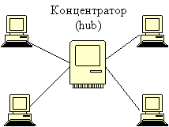

Топология "Звезда"
Топология «Звезда» - схема соединения, при которой каждый компьютер подсоединяется к сети при помощи отдельного соединительного кабеля. Один конец кабеля соединяется с портом сетевого адаптера, другой подсоединяется к центральному устройству, называемому концентратором или сервером (hub). Концентратор обеспечивает параллельное соединение ПК и, таким образом, все компьютеры, подключенные к сети, могут общаться друг с другом.
При такой схеме подключения, запрос от любого сетевого устройства направляется прямиком к серверу, где он обрабатывается с различной скоростью, а затем ответ отсылается по всем направлениям, но принимает сигнал только то устройство, которому предназначен ответ, остальные компьютеры этот сигнал игнорируют.

Предлагаю Вам построить схему "Звезда".

Достоинства топологии "Звезда":
1. Большие возможности для расширения и модернизации;
2. Возможность мониторинга сети и централизованного управления сетью;
3. Сеть устойчива к неисправностям отдельных ПК и к разрывам соединения отдельных ПК.
Недостатки:
1. Отказ хаба влияет на работу всей сети;
2. Большой расход кабеля.
Мы рассмотрели базовые виды топологий, далее мы коротко пробежимся по нестандартным вариантам сети.